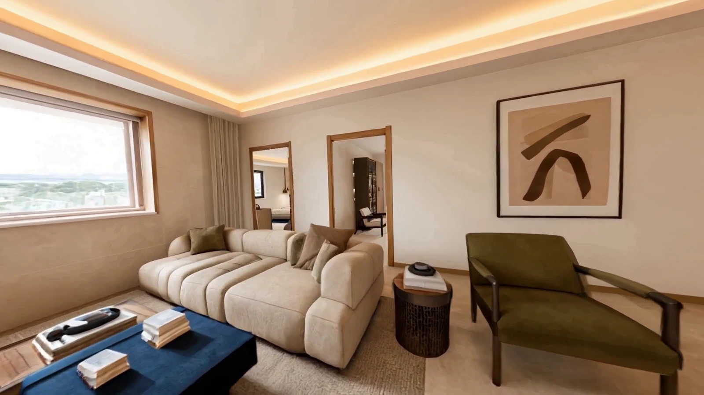
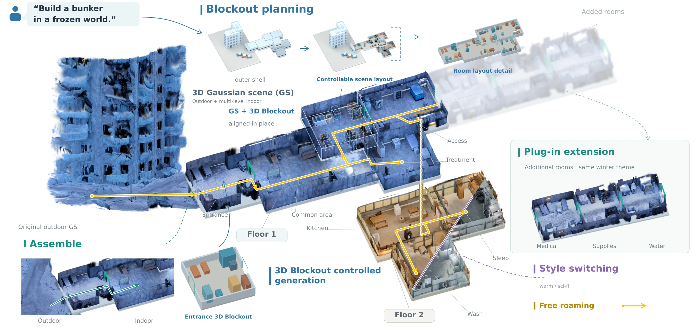
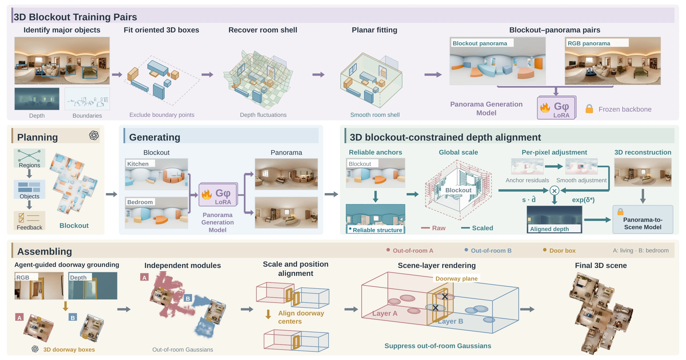
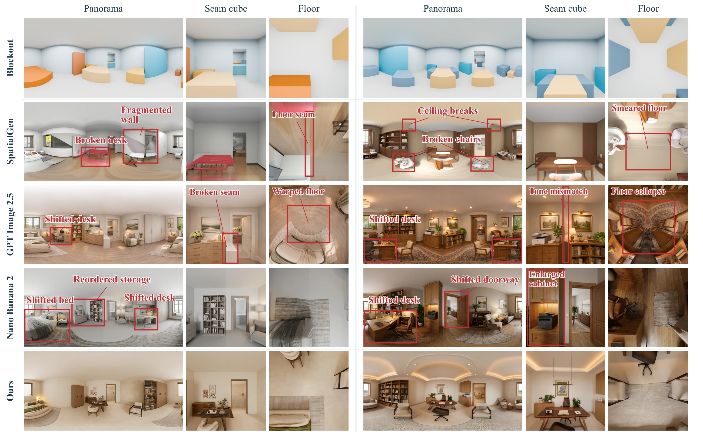
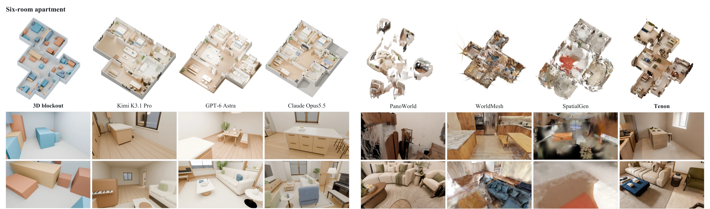

Winter bunker
Walk from a snowy exterior into a two-level bunker.
Tenon turns text into a walkable 3D world with rooms you can swap or restyle without regenerating the rest. An agent’s 3D plan guides panorama generation and helps connect independently built rooms and outdoor spaces through shared openings.
Paper and code will be released as soon as possible.

The same layout can connect multiple floors, take on new rooms, and be restyled.

Walk from a snowy exterior into a two-level bunker.
Tour a six-room home, swap room modules, and see a robot navigate the layout.
An agent plans a shared 3D blockout. Tenon turns layout-guided panoramas into 3D Gaussian scenes, then joins them at shared doorways.

Tenon better preserves the planned object placement and keeps the panorama continuous across the seam.

In a six-room scene, Tenon follows the blockout while preserving detailed materials and geometry.
